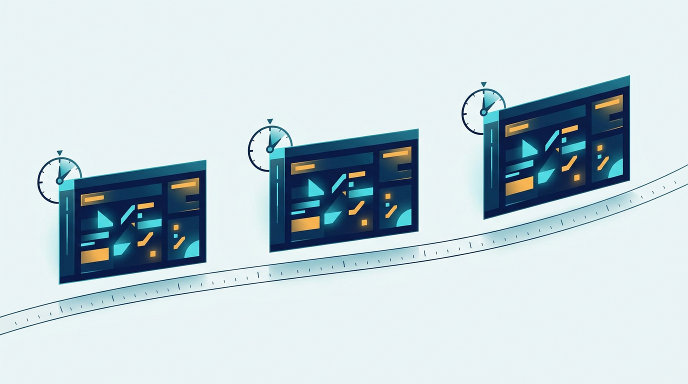
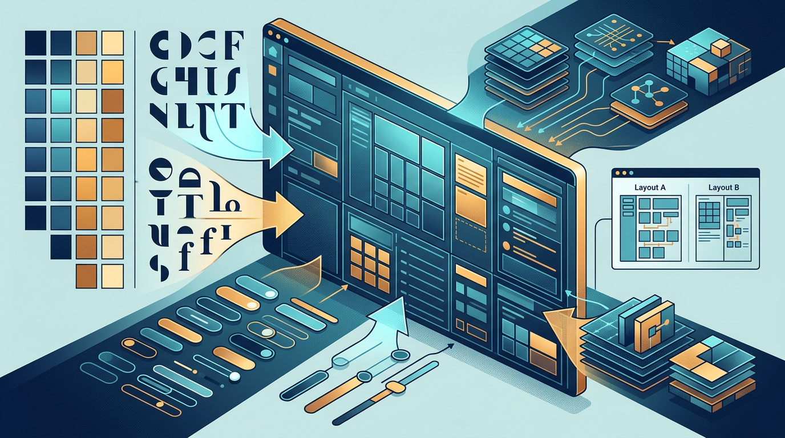
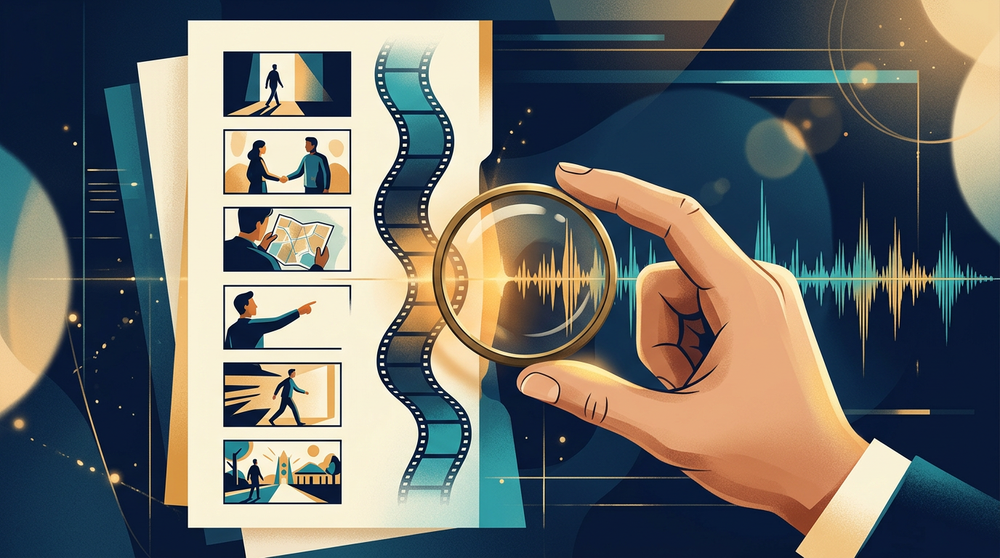

Uma equipe precisa mostrar um painel, destacar um filtro e aproximar um gráfico sem perder o fio da história. Há pelo menos três caminhos para fazer isso: gravar a aplicação funcionando, gerar um vídeo com modelos generativos ou reconstruir a interface como uma animação programática. Nenhum vence sempre. Cada escolha troca fidelidade, liberdade visual, custo de manutenção e controle.
Imagine, por exemplo, um produto hipotético com um painel de indicadores. Na gravação real, o cursor abre o filtro, a lista responde e o gráfico muda porque o sistema está de fato executando. No vídeo generativo, o painel pode se transformar em uma paisagem abstrata e voltar ao produto com uma liberdade difícil de obter em uma captura. Na animação programática, o painel é desenhado em código: a câmera se aproxima, o filtro se move, as barras crescem e o texto entra no tempo exato da trilha.
É essa terceira ideia que torna o Launch Studio interessante: o vídeo passa a ser um programa. Narrativa, identidade visual, dados, geometria e movimento ficam rastreáveis em fontes de um projeto, enquanto agentes ajudam a preparar e executar etapas. A direção, a fidelidade ao produto e a decisão de entrega continuam sendo trabalho humano.
Três maneiras de mostrar o mesmo produto
A gravação da aplicação mostra comportamento real. Ela é a escolha mais forte quando o vídeo precisa provar uma permissão, uma busca, um estado de carregamento ou uma sequência que depende do backend. O que aparece na tela é, em princípio, o que o usuário encontra, embora a gravação ainda possa esconder condições, dados e detalhes importantes.
O vídeo generativo oferece liberdade visual. Ele pode inventar cenários, texturas e metáforas com rapidez, o que é útil quando a intenção é criar atmosfera ou uma peça conceitual. Essa liberdade também exige cuidado: a imagem pode sugerir uma função inexistente, deformar uma marca ou criar uma interface convincente, mas falsa.
A animação programática reconstrói partes da interface como desenhos animados. Em vez de capturar pixels da aplicação, o código desenha componentes, mapas, gráficos, textos e formas; depois controla câmera, zoom, transições e ritmo. O resultado pode ser muito específico e reproduzível, mas exige manutenção: se o produto muda, a reconstrução também precisa mudar.
“Feito com código” não significa “sem IA”. Agentes podem ajudar a pesquisar referências, organizar fatos, extrair tokens, preparar um storyboard e revisar artefatos. Também não significa reprodução automática do backend. O vídeo pode usar a fonte real como referência e, ainda assim, ser apenas uma representação desenhada.
Quando o vídeo vira um programa
O princípio técnico é simples de enunciar: dado um instante t, o desenho deve produzir o mesmo estado. Em 60 quadros por segundo, o instante conceitual do quadro n é n/60. O renderizador pode pedir o quadro 10, depois o 3, depois o 10 novamente, e a resposta precisa continuar igual.
Na prática, um canvas recebe uma cena completa a cada instante. Coordenadas posicionam o mundo; uma câmera determina o que entra no enquadramento; o zoom é interpolado; formas e textos são derivados do tempo; recursos prontos, como fontes e imagens, precisam estar carregados antes de o filme começar. Quando há aleatoriedade visual, ela usa uma semente estável, não um sorteio novo a cada desenho.
Esse modelo permite reproduzir estados específicos e corrigir uma transição na origem. Também não garante ausência de bugs nem igualdade pixel a pixel entre ambientes. Fontes podem variar, navegadores podem rasterizar de modo diferente e uma implementação pode conter um erro perfeitamente determinístico. A geometria vetorial pode ser redesenhada em qualquer tamanho, mas o MP4 exportado é raster: tem resolução fixa, compressão e características próprias de reprodução.
O motor do projeto expõe uma função como seek(t) para posicionar a cena e uma função como frame(t, n) para desenhar com várias amostras temporais. A implementação detalhada está na documentação do frame engine.

Reconstruir a interface sem fingir que ela está rodando
O ponto de partida é um rebuild kit, um conjunto de referências que transforma a identidade do produto em material desenhável. Ele reúne tokens de cor, espaçamento, raios, tipografia, sombras e regras de movimento. Reúne também as strings e os dados com sua origem, além da geometria de mapas, gráficos e componentes.
Uma tela reconstruída pode ter um cartão, uma aba, um mapa e um contador desenhados no canvas. O kit deve indicar de onde vieram o rótulo, o número, a fonte e a forma. Capturas da aplicação entram como comparação: a interface real e o componente desenhado são colocados lado a lado para encontrar diferenças de cor, tamanho, raio, espaçamento e tipografia. A skill de identidade e fidelidade descreve esse processo.
Usar a fonte real é uma regra do processo, não uma prova de fidelidade. A animação não executa o backend, não verifica permissões e não percorre todos os estados da aplicação. Uma tela convincente pode estar errada em um detalhe decisivo: um número inventado, um botão que não existe ou uma transição que o produto nunca faz.
Por isso, dados de exemplo devem ser identificados como dados de exemplo. Informações internas, nomes de clientes, e-mails, chaves e URLs privadas não devem entrar no vídeo por acidente. O objetivo é preservar a verdade do produto sem transformar a peça em um vazamento de contexto.
Agentes, papéis e artefatos encadeados
O Launch Studio separa responsabilidades em cinco papéis. Eles não são cinco fases, e os papéis não substituem aprovação humana. Cada um trabalha sobre artefatos que alimentam o próximo passo:
- Estratégia de narrativa (
story-strategist): organiza o problema, os fatos, a mensagem e a espinha do filme em linhas curtas associadas a gestos. - Identidade e fidelidade (
brand-steward): extrai tokens, textos, dados, geometrias e componentes para formar o rebuild kit. - Direção criativa (
creative-director): define a cadeia de gestos, o mapa de batidas, a linguagem de movimento e as imagens de aprovação. - Engenharia de movimento (
motion-engineer): implementa a cena, a câmera, as transições, a renderização, a mixagem e as verificações técnicas. - Crítica (
film-critic): compara o resultado às referências e avalia continuidade, gesto, tipografia, música, fidelidade, história e acabamento.
O encadeamento começa no pedido e passa por referências, dossiê de fatos, narrativa, kit de reconstrução, batidas e prévias, implementação, renderização e revisão. A identidade pode avançar em paralelo à narrativa: enquanto uma frente coleta fontes visuais e dados, outra organiza o que o filme precisa dizer. Essa paralelização economiza espera sem transformar uma decisão em automatismo.

O que precisa ser aprovado antes do vídeo completo
O processo trabalha com cinco aprovações distintas. A primeira é a das referências: quais filmes definem o padrão de ritmo, câmera, som e acabamento. A segunda é a dos fatos: o que pode aparecer, de onde vem cada número e quais afirmações estão autorizadas. A terceira é a da narrativa, ou espinha: as linhas, a ordem dos acontecimentos e o gesto que cada cena realiza.
A quarta aprovação é o gate C, o mais importante para evitar desperdício. Ele reúne seis quadros-chave produzidos pelo motor real, o mapa de batidas e um clipe de dois a três segundos da transição mais difícil, em qualidade final e com som. Uma imagem estática mostra direção, composição e tipografia; não mostra continuidade. O clipe revela se uma forma realmente se transforma na outra, se a câmera mantém o eixo e se o gesto cai no tempo certo.
A renderização por intervalos, usando opções como --from e --to, reduz o retrabalho durante a iteração. Em vez de gerar o filme inteiro para examinar uma passagem, a equipe pode estudar apenas a faixa problemática. Isso não é garantia de economia nem de resultado: ainda é preciso verificar a transição e depois renderizar a versão completa.
A quinta aprovação é a do vídeo final. Ela inclui a revisão independente, a checagem de continuidade, a fidelidade ao produto, as palavras na tela, a cor, o som e a decisão de enviar ou revisar. A skill de crítica trata essa etapa como revisão contra referências, não como um simples “parece bom”.
Som e movimento compartilham a mesma linha do tempo
O movimento não deveria ser editado contra uma música escolhida no fim. A trilha padrão do projeto é composta em código Python com numpy, na mesma grade temporal usada pela animação. Um mapa de batidas alinha cenas, gestos, quedas, efeitos e mudanças de energia. A escolha musical e a escuta final continuam humanas; código não decide se uma trilha tem intenção, gosto ou o peso emocional adequado.
Quando o dono fornece uma música, os direitos continuam sendo responsabilidade dele. O fato de uma faixa caber tecnicamente no mapa de batidas não autoriza seu uso. E uma trilha sintética, embora reproduzível, não elimina a necessidade de ouvir a mixagem inteira.
O caminho de produção pode ser resumido assim: HTML e canvas desenham a cena; Chromium, conduzido por Playwright, captura os quadros; PNGs entram no FFmpeg; o FFmpeg gera o vídeo e combina o áudio. O renderizador pode amostrar vários instantes para criar motion blur, especialmente em panorâmicas rápidas. Mais amostras deixam o movimento mais contínuo, mas aumentam o custo de renderização.
Os scripts de revisão verificam sintomas como quadro isolado, corte inesperado, congelamento prolongado, loudness, picos e cor. Quando aparecem alvos como -14 LUFS e -1 dBTP, eles são metas internas dessa configuração, não uma norma universal para todo vídeo, plataforma ou player. Uma checagem automatizada também não promete equivalência entre players: decodificação, escala, perfil de cor e volume percebido ainda podem variar.
O script de renderização mostra como o navegador e o FFmpeg se encadeiam. Já o script de QA de quadros deixa claro o limite da heurística: ele sinaliza possíveis problemas técnicos, mas não certifica verdade, narrativa, fidelidade ou bom gosto.
Como começar sem confundir instalação com resultado
Os dois comandos documentados para adicionar o projeto são estes:
/plugin marketplace add leamariek/launch-studio/plugin install launch-studio@launch-studio
Eles são comandos dentro do Claude Code, não comandos do terminal do sistema. O Launch Studio é um plugin de terceiros, e não uma ferramenta oficial da Anthropic. A documentação lista Node 18 ou superior, Playwright, Chromium ou Chrome, FFmpeg e Python 3 com numpy. O yt-dlp é usado quando referências de vídeo vêm de URLs.
O caminho do Chrome varia conforme o ambiente. Instalar o plugin não instala nem valida automaticamente todas essas dependências, não confirma a disponibilidade das fontes do produto e não transforma uma solicitação vaga em um vídeo pronto. O ponto de partida é um pedido claro, por exemplo: “Crie um teaser de 20 segundos para este produto hipotético, usando a fonte do projeto como referência, com uma câmera contínua, foco no filtro e no gráfico, dados de exemplo identificados e aprovação humana dos seis quadros antes do vídeo completo”.
Esse pedido já separa intenção, fonte, gesto, escopo e aprovação. O restante depende da qualidade dos materiais fornecidos e das decisões tomadas nos gates.
Onde essa abordagem encaixa, e onde não encaixa
Ela combina bem com teasers de SaaS, explicações curtas de interface, lançamentos de funcionalidades e motion graphics cuja fonte possa ser inspecionada. Também faz sentido quando o valor está em controlar exatamente a câmera, a transição, o texto e a relação com a música, sem depender de um editor de vídeo ou de uma gravação longa.
Eu escolheria outra abordagem para um tutorial que precisa provar comportamento real, para um vídeo centrado em pessoas e expressão corporal ou para uma reconstrução cuja manutenção custaria mais do que uma captura bem planejada. A gravação real é mais honesta quando a prova está na execução. Um vídeo generativo pode ser mais adequado quando a metáfora visual importa mais do que a interface.
Há limites concretos. O produto pode evoluir e deixar a reconstrução divergente. Uma direção ruim continua sendo ruim quando expressa em código. O QA heurístico pode sinalizar um quadro estranho, mas não sabe se a história é verdadeira ou se uma escolha tem bom gosto. Direitos de música, fontes, marcas e imagens continuam relevantes.
Também é importante não projetar sobre o projeto evidências que ele não oferece. A arquitetura, por si só, não informa quanto tempo ou dinheiro uma equipe economizará. Isso depende do produto, do roteiro, das revisões e do ambiente de renderização. Os exemplos do projeto ilustram o método, mas não substituem uma avaliação no seu próprio fluxo.

O critério que sobra
Vale testar o Launch Studio quando a rastreabilidade da fonte, o controle do movimento e a manutenção do código ajudam mais do que atrapalham o tipo de vídeo desejado. O ganho potencial não está em apertar um botão, mas em manter narrativa, identidade, dados, geometria e tempo no mesmo sistema revisável.
Se a peça precisa provar o comportamento real, grave o produto. Se precisa de liberdade visual, considere geração ou direção mais abstrata. Se precisa transformar uma interface em uma sequência precisa, editável e inspecionável, o vídeo como programa oferece um caminho convincente, desde que a revisão humana permaneça no centro.
No fim, a pergunta mais útil não é se o vídeo foi feito com código ou com uma câmera. É: como você mantém a fidelidade entre o produto que muda todos os dias e a comunicação que pretende representá-lo?